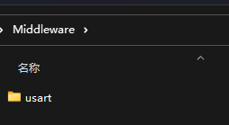
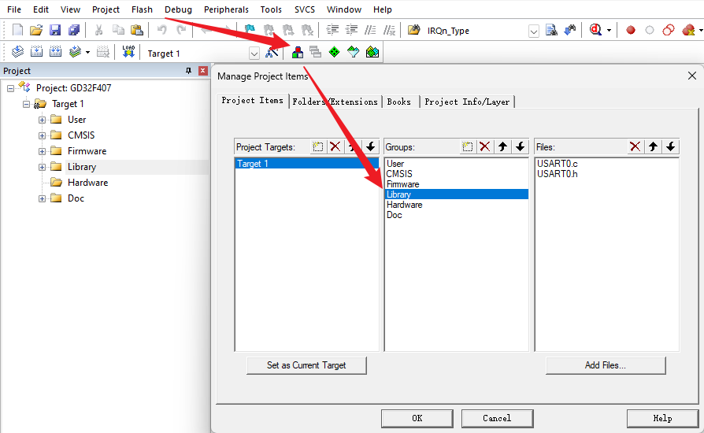
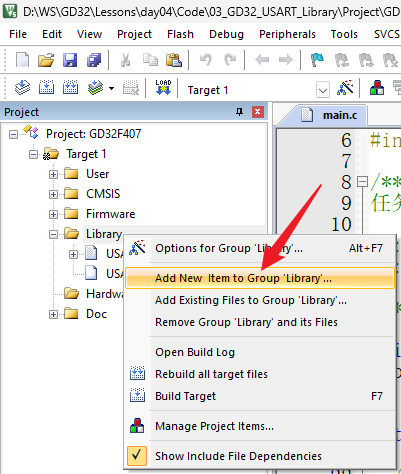
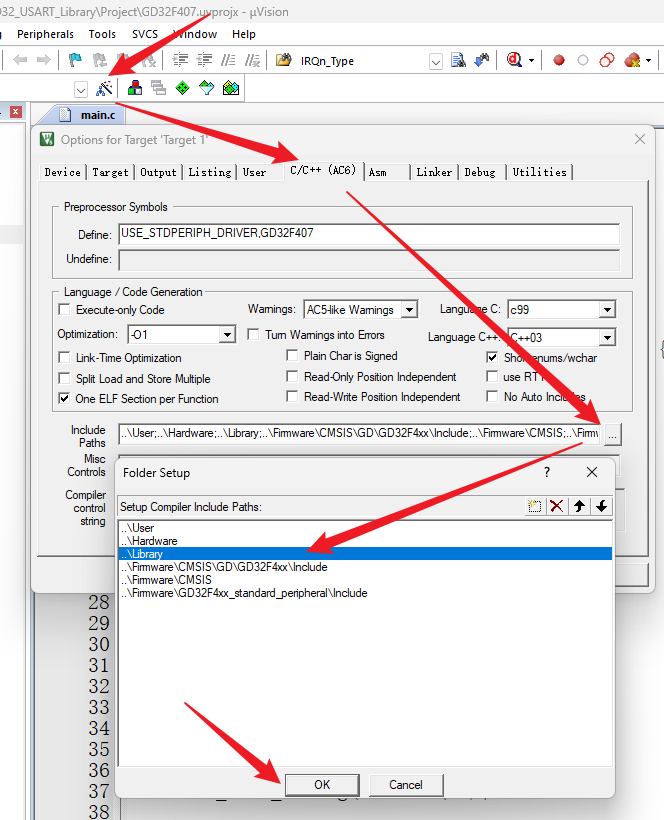

<!DOCTYPE lake>
<h2 data-lake-id="zKamL" id="zKamL"><span data-lake-id="ud4bad923" id="ud4bad923">学习目标</span></h2><ol list="u75566f71"><li data-lake-id="u943a8036" fid="u0d29d303" id="u943a8036"><span data-lake-id="u95245b9e" id="u95245b9e">掌握封装抽取流程</span></li><li data-lake-id="u2d05a989" fid="u0d29d303" id="u2d05a989"><span data-lake-id="u4387bd91" id="u4387bd91">掌握抽取封装策略</span></li></ol><h2 data-lake-id="RK3kJ" id="RK3kJ"><span data-lake-id="u6b42387a" id="u6b42387a">学习内容</span></h2><h3 data-lake-id="GdXZm" id="GdXZm"><span data-lake-id="u916a7c99" id="u916a7c99">开发流程</span></h3><ol list="uc2970e6b"><li data-lake-id="u020c61ab" fid="udb53ef08" id="u020c61ab"><span data-lake-id="udd748a54" id="udd748a54">在文件系统中，创建库目录Library</span></li><li data-lake-id="u1f34b04e" fid="udb53ef08" id="u1f34b04e"><span data-lake-id="u97471a4d" id="u97471a4d">在keil工程中，创建分组管理库Library</span></li><li data-lake-id="u07c661d6" fid="udb53ef08" id="u07c661d6"><span data-lake-id="ub09f6f2e" id="ub09f6f2e">编写中间件逻辑</span></li><li data-lake-id="u6aba55a8" fid="udb53ef08" id="u6aba55a8"><span data-lake-id="u6575f735" id="u6575f735">使用中间件</span></li></ol><h4 data-lake-id="u8kqP" id="u8kqP"><span data-lake-id="u30182d7f" id="u30182d7f">文件目录创建</span></h4><p data-lake-id="uac87be77" id="uac87be77"><span data-lake-id="u9bc36994" id="u9bc36994">在工程根目录，创建</span><code data-lake-id="u32474599" id="u32474599"><span data-lake-id="u6661364a" id="u6661364a">Library</span></code><span data-lake-id="u01c821a0" id="u01c821a0">目录，在这个目录中，创建具体的功能目录，当前是做串口功能，我们新建</span><code data-lake-id="u2a643efe" id="u2a643efe"><span data-lake-id="ubc1b18a9" id="ubc1b18a9">usart</span></code><span data-lake-id="ub7e22f20" id="ub7e22f20">。</span></p><p data-lake-id="u633853fd" id="u633853fd"></p><h4 data-lake-id="oWV0O" id="oWV0O"><span data-lake-id="ua657c6d9" id="ua657c6d9">分组创建</span></h4><ol list="udbc5dfdc"><li data-lake-id="u4fd6fbf7" fid="u8eedc340" id="u4fd6fbf7"><span data-lake-id="u0d1de665" id="u0d1de665">创建</span><code data-lake-id="u2fa6e4be" id="u2fa6e4be"><span data-lake-id="u357218f3" id="u357218f3">Library</span></code><span data-lake-id="u7b05f13d" id="u7b05f13d">分组。右键进入</span><code data-lake-id="uf7e1e998" id="uf7e1e998"><span data-lake-id="uac2c0f03" id="uac2c0f03">Manage Project Items</span></code></li></ol><p data-lake-id="u59209f6b" id="u59209f6b" style="padding-left: 2em"></p><ol list="u64aeb0cd" start="2"><li data-lake-id="u6004b76b" fid="u1d9b96af" id="u6004b76b"><span data-lake-id="u88f3ab07" id="u88f3ab07">右键创建头文件和c文件</span></li></ol><p data-lake-id="uecfbe0c1" id="uecfbe0c1" style="padding-left: 2em"></p><p data-lake-id="u32df243d" id="u32df243d" style="padding-left: 2em"><span data-lake-id="u724711fb" id="u724711fb">​</span><br/></p><p data-lake-id="uc9e62454" id="uc9e62454" style="padding-left: 2em"><span data-lake-id="ua5b54d0f" id="ua5b54d0f">添加include引入</span></p><p data-lake-id="ue3d02008" id="ue3d02008" style="padding-left: 2em"></p><h3 data-lake-id="vadFg" id="vadFg"><span data-lake-id="u4cb549b7" id="u4cb549b7">接口定义</span></h3><p data-lake-id="u661ca921" id="u661ca921"><span data-lake-id="u73b5afad" id="u73b5afad">初始化及发送功能定义</span></p><span class="yuque-card-unsupported">[codeblock]</span><p data-lake-id="ua14ff540" id="ua14ff540"><span data-lake-id="u08b0347b" id="u08b0347b">接收回调定义</span></p><span class="yuque-card-unsupported">[codeblock]</span><span class="yuque-card-unsupported">[codeblock]</span><ul list="u46c08d5f"><li data-lake-id="u82e317d5" fid="ud5f07693" id="u82e317d5"><span data-lake-id="u4e1caf2e" id="u4e1caf2e">通过宏定义做开关</span></li></ul><p data-lake-id="uf96216dd" id="uf96216dd"><span data-lake-id="u720f793c" id="u720f793c">系统printf打印定义</span></p><span class="yuque-card-unsupported">[codeblock]</span><span class="yuque-card-unsupported">[codeblock]</span><p data-lake-id="u65ab943d" id="u65ab943d"><br/></p><h3 data-lake-id="JOytL" id="JOytL"><span data-lake-id="u9576f04c" id="u9576f04c">完整代码</span></h3><span class="yuque-card-unsupported">[codeblock]</span><span class="yuque-card-unsupported">[codeblock]</span><h2 data-lake-id="j0bHd" id="j0bHd"><span data-lake-id="ua6088074" id="ua6088074">练习题</span></h2><ol list="u76be07c4"><li data-lake-id="uaa010397" fid="u969c3ea7" id="uaa010397"><span data-lake-id="udf6cdbaa" id="udf6cdbaa">实现串口驱动定义</span></li></ol>